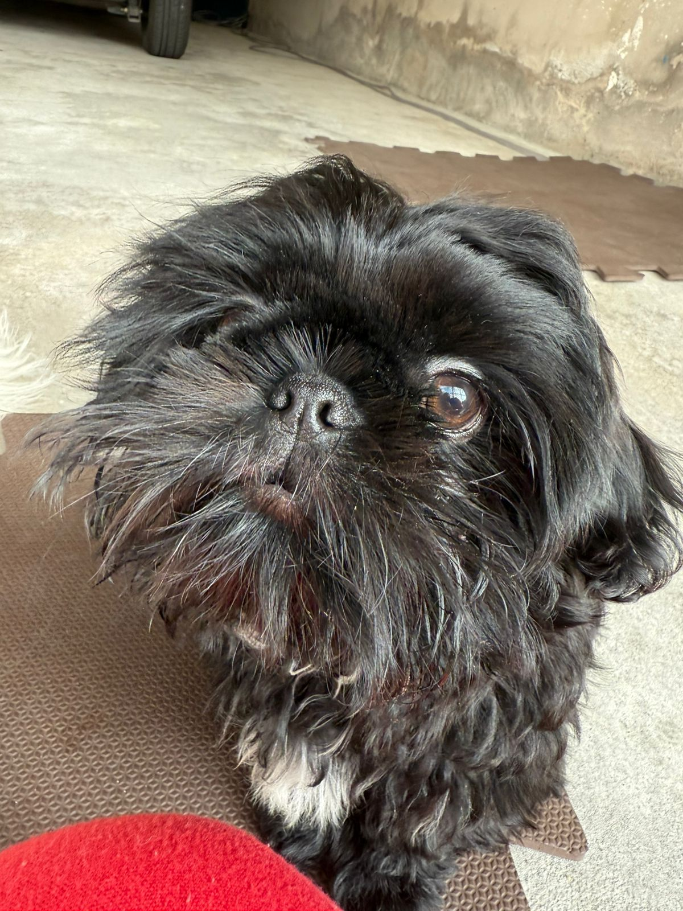
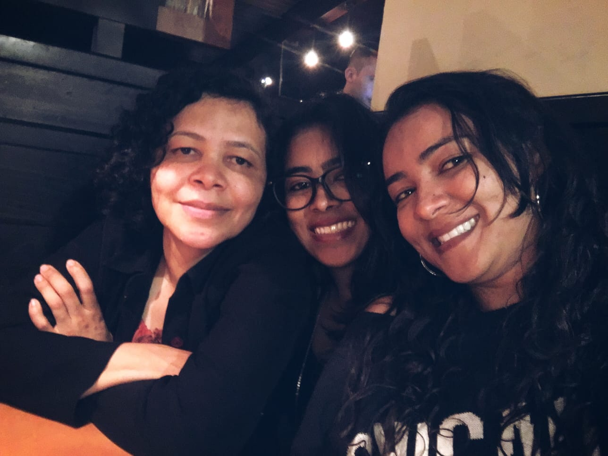

Quem sou eu
Sou Fullstack & Automation Developer com mais de 5 anos de experiência em desenvolvimento de sistemas, automação e suporte técnico. Tenho uma trajetória que começou nas redes de computadores e foi evoluindo naturalmente para o desenvolvimento de software — sempre movida pela curiosidade e pela vontade de resolver problemas reais com tecnologia.
Trabalho com Python, SQL e Microsoft Power Platform para construir automações, dashboards e soluções orientadas a dados. Tenho uma base sólida em frontend e uma visão full stack que me permite enxergar o projeto como um todo, do banco de dados à interface.
Sou de São Paulo, tenho o sonho de morar no Canadá — onde já fiz intercâmbio — e acredito que tecnologia é muito mais do que código: é autonomia, liberdade e possibilidade.
Mulher na tecnologia
💜 Para as que ainda estão chegando
Entrar na área de tecnologia sendo mulher nunca foi o caminho mais fácil. Desde o Técnico em Redes no SENAI até hoje como desenvolvedora, eu aprendi que o lugar da gente na tech não é uma concessão — é uma conquista que se reconstrói todo dia.
Em anos de mercado, aprendi que a nossa presença muda a forma como a tecnologia é feita. Trazemos perspectivas diferentes, questionamos o óbvio e construímos soluções mais humanas. Não somos a exceção — somos parte essencial desse ecossistema.
Se você está começando agora, saiba: vai ter dias difíceis, momentos de síndrome da impostora, projetos que parecem impossíveis. Mas cada bug resolvido, cada script que funciona, cada deploy bem-sucedido é prova de que você pertence aqui. Você pertence aqui.
Tecnologia e saúde — minha história com o lúpus
🎗️ Quando a tecnologia se torna medicina
Tenho lúpus — uma doença autoimune crônica que afeta o corpo de formas imprevisíveis. Dias bons e dias ruins. Crises e remissões. Uma convivência que exige adaptação constante e muita escuta do próprio corpo.
A tecnologia entrou na minha vida como ferramenta de trabalho, mas se tornou algo muito maior: uma forma de ter controle onde o controle é escasso. Quando o corpo não coopera, o trabalho remoto me permite contribuir sem me expor. Quando a energia é limitada, a automação que construo poupa esforço — meu e de toda a equipe.
Aprender a programar durante períodos de crise me ensinou algo que nenhuma faculdade ensina: a paciência com o processo. Um bug por vez. Uma linha de código por vez. Às vezes um dia inteiro pra entender um conceito — e tudo bem. O progresso não precisa ser linear para ser real.
O lúpus me ensinou a priorizar o que importa, a pedir ajuda, a celebrar pequenas vitórias. E curiosamente, essas são exatamente as habilidades que fazem uma boa desenvolvedora.
"A tecnologia me deu algo que o lúpus tentou tirar: a sensação de que sou capaz."
Meu porto seguro
Vinicius
Meu noivo e companheiro de vida. O primeiro a comemorar cada conquista e a segurar a mão nos dias difíceis.
Ragnar
O corajoso. Tem o nome de um viking e atitudes de um rei. Presença constante nos dias de home office.

Luke
O mais carinhoso. May the force be with you — e com o Luke, a força da fofura é imbatível.

Luzinete e Letícia
Minha mãe, exemplo de cuidado e coragem. Minha irmã, minha melhor amiga de vida. Parceira de risadas e segredos.
Trajetória
Jul 2025 – Presente
Desenvolvedor de Sistemas
SENAI Brás
Python, Power BI, Power Automate — automações e dashboards para dados educacionais.
Mai 2023 – Out 2024
Pós-Graduação — Desenvolvimento Full Stack
Descomplica
Frontend, Backend, React, Node.js, AWS Cloud e banco de dados.
Mar 2022 – Jul 2025
Analista de Sustentação
Vertem
Suporte a plataformas, ajustes de frontend, SQL, documentação técnica e treinamentos.
Fev 2022 – Dez 2024
Bacharelado em Análise e Desenvolvimento de Sistemas
FATEC Carapicuíba
Engenharia de software, POO, banco de dados, estrutura de dados e segurança da informação.
Abr 2018 – Mar 2022
Técnico em Redes de Computadores
Telium Networks
NOC, monitoramento de infraestrutura, suporte técnico a clientes e operadores em campo.
Fev 2015 – Dez 2017
Bacharelado em Gestão da Tecnologia da Informação
FATEC Barueri
Gestão de TI, governança, infraestrutura, sistemas de informação e planejamento estratégico.
Jul 2012 – Jul 2014
Técnico em Redes de Computadores
SENAI Jandira
Cabeamento, roteadores, switches, fibra óptica — onde tudo começou.
Experiência profissional
Desenvolvedor de Sistemas
SENAI Brás — Full-time
Jul 2025 – Presente
- Desenvolvimento e manutenção de dashboards com Power BI
- Scripts de automação em Python para processamento de dados
- Modelagem e manipulação de dados com SQL
- Criação de workflows com Power Automate
- Contribuição para iniciativas de cultura de dados
Automação de análise com IA
Script Python que lê uma planilha Excel com dados, organiza as informações, envia para uma IA analisar e encaminha o resultado por e-mail aos responsáveis. O que levava 1 dia de trabalho passou a ser feito em menos de 1 hora.
Automação com Playwright
Automação web com Playwright que acessa um portal de pesquisas de satisfação de alunos, faz o download automático dos relatórios e os encaminha para o Power BI — eliminando o processo manual diário.
Analista de Sustentação
Vertem — Full-time
Mar 2022 – Jul 2025
- Análise e resolução de problemas em plataformas e sistemas
- Ajustes de frontend com HTML, CSS e JavaScript
- Análise de banco de dados e manipulação com SQL
- Produção e manutenção de documentação técnica
- Treinamento de equipes internas e novos colaboradores
Documentação técnica e treinamentos
Criação de documentação técnica completa de ferramentas e procedimentos internos. Condução de treinamentos para novos colaboradores e para equipes de outros setores — garantindo autonomia e padronização de processos.
Automação de relatórios
Scripts Python para automatizar a geração de relatórios diários e semanais que antes eram feitos manualmente — reduzindo erros e liberando tempo da equipe para atividades mais estratégicas.
Gestão de crises
Participação ativa em salas de crise — situações onde todas as equipes se unem para resolver incidentes críticos em produção. Experiência com diagnóstico rápido, comunicação sob pressão e resolução colaborativa de problemas.
Técnico em Redes de Computadores
Telium Networks — Full-time
Abr 2018 – Mar 2022
- Diagnóstico e resolução de problemas de infraestrutura de rede
- Monitoramento de ativos: rádios wireless, backbones e equipamentos de telefonia
- Suporte técnico a clientes de internet dedicada e operadores em campo
- Gerenciamento de acesso e infraestrutura em data center
Mapeamento de infraestrutura
Projeto em conjunto com o time de infraestrutura para mapear todos os ativos de rede da empresa — identificando equipamentos que precisavam de manutenção ou substituição. Trabalho iniciado a partir de uma exigência de padronização da ENEL.
Operação NOC
Atuação no setor NOC (Network Operations Center) com monitoramento contínuo de todos os ativos da empresa — rádios wireless, backbones, equipamentos de telefonia — e suporte remoto a técnicos em campo para identificação de rompimentos de fibra ótica.
Habilidades técnicas
Linguagens & Frameworks
Automação & Plataformas
Banco de Dados
Ferramentas
Web & Sistemas
Formação acadêmica
Pós-Graduação — Desenvolvimento Full Stack
Descomplica
Mai 2023 – Out 2024
Ênfase do curso
Especialização focada em formação prática full stack — do frontend com HTML, CSS, JavaScript e React até o backend com Node.js, estratégias de banco de dados e serviços de cloud na AWS.
Bacharelado em Análise e Desenvolvimento de Sistemas
FATEC Carapicuíba
Fev 2022 – Dez 2024
Ênfase do curso
Tecnologia em Análise e Desenvolvimento de Sistemas com foco em desenvolvimento de software completo — da lógica de programação e estruturas de dados até engenharia de software, banco de dados, redes e segurança.
Bacharelado em Gestão da Tecnologia da Informação
FATEC Barueri
Fev 2015 – Dez 2017
Ênfase do curso
Curso com visão híbrida entre gestão e tecnologia — abrangendo tanto a parte técnica quanto a gestão empresarial (planejamento estratégico, governança de TI, gestão de equipes, projetos e finanças).
Técnico em Redes de Computadores
SENAI Jandira
Jul 2012 – Jul 2014
Ênfase do curso
Formação técnica focada em implantação, manutenção e administração de redes de computadores — desde montagem de hardware e cabeamento estruturado até configuração de roteadores, switches, firewalls e redes wireless.
🇨🇦 Intercâmbio em Vancouver
✈️ Um mês no Canadá — julho de 2019
Em julho de 2019 realizei um dos maiores sonhos da minha vida: fiz um intercâmbio de um mês em Vancouver, Canadá. Estudei inglês em período integral na SGIC (St. George International College), uma das escolas mais completas da cidade, e mergulhei de cabeça em uma nova cultura, um novo idioma e uma nova versão de mim mesma.
E o melhor: passei meu aniversário lá. No dia 4 de julho, a família anfitriã preparou uma festinha especial com bolo e uma mistura de comidas brasileiras e canadenses — um presente que nunca vou esquecer.
Durante esse mês, explorei lugares incríveis: Whistler, com suas montanhas de tirar o fôlego, o animado Lonsdale Quay, o lindo Stanley Park à beira-mar, e o tranquilo Joffre Lakes com seus lagos de um azul impossível. Cada lugar ficou guardado na memória e no coração.
Memórias em fotos


Idiomas
Português
Nativo
Inglês
Inglês Intermediário
Intercâmbio no St. George International College, Vancouver, Canadá — July 2019